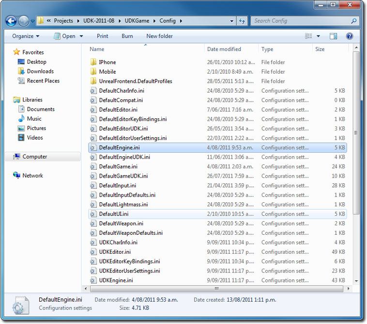
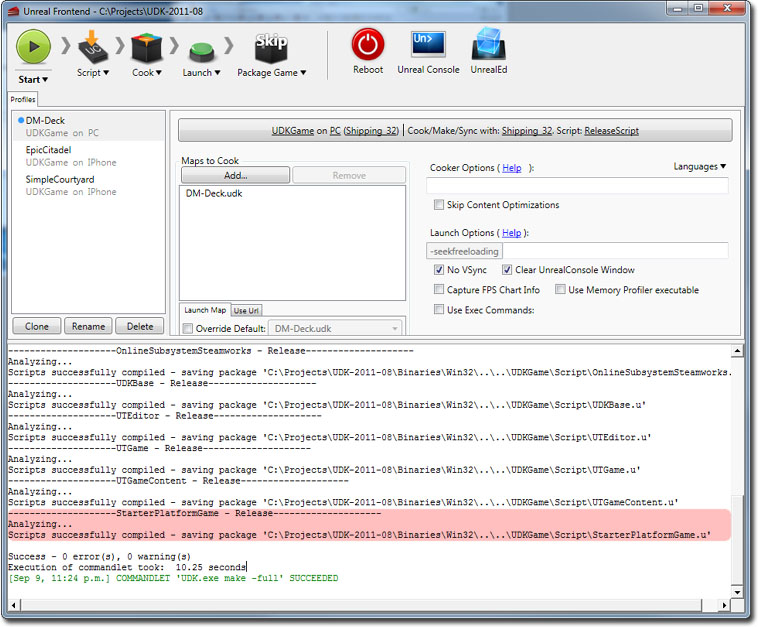
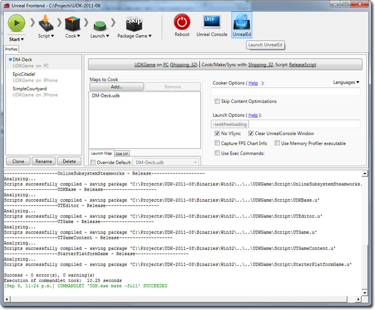
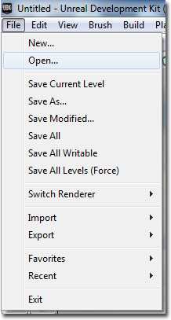
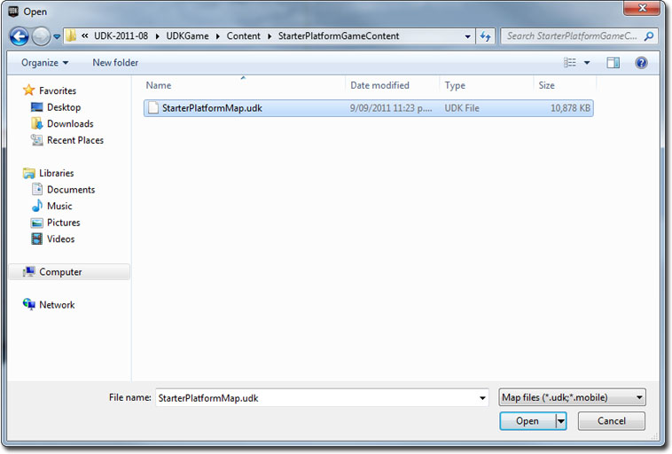

UDN
Search public documentation:
DevelopmentKitGemsPlatformerStarterKitJP
English Translation
中国翻译
한국어
Interested in the Unreal Engine?
Visit the Unreal Technology site.
Looking for jobs and company info?
Check out the Epic games site.
Questions about support via UDN?
Contact the UDN Staff
中国翻译
한국어
Interested in the Unreal Engine?
Visit the Unreal Technology site.
Looking for jobs and company info?
Check out the Epic games site.
Questions about support via UDN?
Contact the UDN Staff
UE3 ホーム > Unreal Development Kit Gems > プラットフォーマー スターターキット
UE3 ホーム > 入門編 : プログラミング > プラットフォーマー スターターキット
UE3 ホーム > 入門編 : プログラミング > プラットフォーマー スターターキット
プラットフォーマー スターターキット
2011年7月に UDK に即して最終テスト実施済み
概要
このスターターキットには、 Shadow Complex などのような横スクロール型プラットフォーマーゲームを開発する時の土台として使用することができるサンプルコードが含まれています。

同梱されているものについて
- ノンプレイヤーコントローラーポーン (SPG_AIPawn) - NPC (ノンプレイヤーコントローラー) ポーンはプレイヤーを追跡することができます。プレイヤーにぶつかると、爆発してプレイヤーに何らかのダメージを与えます。プレイヤーは、これらの NPC ポーンを撃って、倒されないようにしなければなりません。
- 横スクロールカメラ (SPG_Camera + SPG_CameraProperties) - このカメラは、プレイヤーの位置に、オフセット (SPG_CameraProperties に保存されています) を加えます。さらに、カメラの回転を調整することによって、プレイヤーに対面するようにし、横スクロールカメラを作ります。
- アーキタイプのポーンと武器を使用するゲーム情報 (SPG_GameInfo) - このゲーム情報は、プレイヤーのためにアーキタイプのポーンを作成するとともに、アーキタイプの武器をプレイヤーに与えます。ここでアーキタイプが使用される理由は、ゲームデザイナーが再コンパイルすることなくパラメータを素早く調整することができるためです。
- インベントリマネージャ (SPG_InventoryManager) - インベントリマネージャは、アーキタイプに基づくインベントリをデフォルトでスポーンさせることができません。
- プレイヤーコントローラー (SPG_PlayerController) - このプレイヤーコントローラーは、動きの軸をロックするとともに、プレイヤーの回転を扱います。
- プレイヤーポーン (SPG_PlayerPawn) - このプレイヤーポーンは、ターンを扱うことによって、プラットフォーマーのポーンのように振る舞います。これによって、左右のみが補間されます。また、上方下方の照準も処理します。武器の発射物が発射される部分を処理するコードも含まれています。
- 武器 (SPG_Weapon) - この武器クラスは、プロパティのほとんどが「Unreal」エディタにエクスポーズされているため、アーキタイプとすることができます。このクラスは、プレイヤーが武器を発砲するときに、メッシュアタッチメントおよび特殊エフェクト、サウンドも処理します。
- HUD (SPG_HUD) - プレイヤーポーンのヘルス値を示すシンプルな HUD です。
- ピックアップ (SPG_HealthPickup) - NPC が倒されたときにランダムに落とす簡単なピックアップ (アイテム) です。
コードの構造
カメラはどのように機能するか?
カメラは、SPG_Camera 内で、カメラの位置と回転をセットすることによって機能します。どのカメラクラスを使用するかは、PlayerController 内で定義されます。SPG_PlayerController において、SPG_Camera がデフォルトのプロパティでどのように定義されているか確かめてください。 レンダリングされるあらゆるフレームについて、UpdateViewTarget (更新ビューターゲット) 関数が呼び出されます。SPG_Camera によって、カメラの位置がターゲットの位置にセットされます (通常プレイヤーのポーンになります)。これに SPG_CameraProperties のアーキタイプ内に保存される CameraOffset (カメラオフセット) が加わります。こうすることによって、ソースコードを再コンパイルすることなく、「Unreal」エディタ内で即座にカメラのオフセットを調整することができるようになります。 最後に、カメラの回転は、カメラをターゲットの位置に向かわせることによってセットされます。これによって、カメラがオフセットにかかわらず常にターゲットを見ることになります。ゲームはどのように機能するか?
game info (ゲーム情報) は、「Unreal」エディタ内でプレイしながら、「Unreal」エディタによってセットされます。コンフィギュレーションファイルをデフォルトのゲームタイプとするには、調整が必要となります。SPG_GameInfo は、2 つのアーキタイプへの参照を保存します。1 つは、プレイヤーのポーンへの参照で、もう 1 つは、プレイヤーがもつデフォルトの武器への参照です。このときアーキタイプが使用されることによって、ソースコードを再コンパイルすることなく即座に「Unreal」エディタ内で調整できるようになります。 プレイヤーがポーンを要求した場合は、SpawnDefaultPawnFor が呼び出されます。このときプレイヤーポーンのアーキタイプがスポーンされ、プレイヤーに渡されます。 デフォルトのインベントリがポーンに渡される場合、アーキタイプの武器がポーンに与えられます。 SPG_GameInfo では、デフォルトのプロパティの中で、PlayerController クラスと HUD クラスも定義されます。非プレイヤーにコントロールされるポーンはどのように機能するか?
このスターターパックには、プレイヤーに駆け寄って来て、接触すると爆発するポーンが存在します。簡単なロジックだけが必要であるため、AIControllers は一切不要です。 デフォルトでは、ポーンの物理モードが falling (落下) にセットされています。これによって、空中にスポーンしたポーンは、地面に落下します。ポーンが地面または他のアクタ上に着地すると、Landed (着地) イベントが呼び出されます。これが呼び出されると、ポーンの物理が PHYS_Flying にセットされます。これによって、速度と加速度を調整して、ポーンにプレイヤーを追跡させることが、簡単にできるようになります。 NPC ポーンは、毎ティックごとに敵がいないかどうかをチェックします。敵がいない場合は、辺りのプレイヤーコントローラーおよびポーンが検索されて、敵が割り当てられます。敵がいる場合で、なおかつ敵が飛んでいる場合は、回転がセットされて敵に正対するようになります。敵に向かって移動する速度と加速度もセットされることになります。 ポーンが倒されたとき、PlayDying 関数が呼び出されます。PlayDying 関数によって、骨格メッシュのためのラグドールモードが有効化されます。 偶然によってピックアップがスポーンされることになった場合は、参照されているアーキタイプが利用されて、ピックアップが作成されます。 ポーンは、プレイヤーポーンとぶつかると、爆発して何らかのダメージをプレイヤーに与え、自らを破棄します。プレイヤーのコントロールはどのように機能するか?
プレイヤーのコントロールは、 SPG_PlayerController.PlayerWalking.PlayerMove 内で処理されます。カメラの回転の軸を使用することで、ポーンがカメラのビュー座標を使って動くようにすることができます。このサンプルゲームは、横スクロールゲームであるため、Y 軸と aStrafe の値だけが必要となります。このため、プレイヤーは、左方向または右方向にしか動くことができません。 プレイヤーが左右どちらかの方向に動く場合、それにふさわしい回転がセットされます。これによって、プレイヤーは、自身の動きに従って、左を向いたり右を向いたりするようになります。 通常、UpdateRotation (回転の更新) においては mouse X と mouse Y の両方が扱われますが、ヨーが自動化されているため、処理される必要があるのは mouse Y のみです。この場合、mouse Y は、ポーンのピッチを制御します。さらにこれはポーンに渡されます。 SPG_Pawn において、ヨーは、ポーンを回転させることによって処理されます。一方、ピッチは、ポーンの骨格メッシュコンポーネントのアニメツリー内で AimOffset (照準オフセット) アニメノードを調整することによって処理されます。AimOffset アニメノードは、プレイヤーのポーンを、うまく機能する異なる照準ポーズにトゥイーンします。詳細については、 アニメーションノード のページを参照してください。武器はどのように機能するか?
このスターターキットの武器は、「Unreal Tournament 3」の武器と非常に良く似た機能をもちます。 武器がまずスポーンされてプレイヤーに渡されると、ClientGivenTo が実行されます。この関数では、SPG_Weapon によって三人称武器メッシュがプレイヤーのポーンにアタッチされます。 プレイヤーがこの武器を発砲すると、武器が適切な発砲ステートに送られて、最終的に ProjectileFire が呼び出されます。発射物がスポーンされた位置と回転は、プレイヤーポーンの GetWeaponStartTraceLocation 関数および GetAdjustedAimFor 関数から取得されます。 SPG_PlayerPawn の場合は、単に、ソケットの位置と回転を返します。これによって、発射物が正しい位置から発射され、正しい方向に飛んで行きます。 武器が発砲されると、PlayFireEffects が呼び出され、銃口フラッシュがアクティベートされます。武器の発砲が止まると、StopFireEffects が呼び出されて、銃口フラッシュのアクティベートが解除されます。なぜ独立したプレイヤーポーンを使用するのか?
このスターターキットで独立したプレイヤーポーンが使用されるのは、機能の一部 (上下の照準など) が、プレイヤーポーンにしか利用されないためです。このような機能が NPC には用いられないため、プレイヤーポーンを分離したのです。また、ポーンがプレイヤーに属しているかどうかを簡単にチェックすることもできます。もっとも、このことは、ポーンのコントローラーをチェックしても簡単に行うことができたでしょうけど。このスターターキットの使用方法
zip ファイルをダウンロードしたら、それらの中身を UDK のベースディレクトリに解凍します。フォルダーはすべてすでに準備されています。コードは、 Development\Src\StarterPlatformGame\Classes 内に置かれています。また、コンテンツはすべて UDKGame\Content\StarterPlatformGameContent に含まれています。 スターターキットを使用する前に、まずプロジェクトをコンパイルする必要があります。このスターターキットなどのようなカスタムのプロジェクトをセットアップおよびコンパイルする方法については、 カスタムの Unrealscript プロジェクト を参照してください。 コードがコンパイルされたら、「Unreal」エディタを起動して、 StarterPlatformMap というサンプルのプラットフォーマーマップを開くことができます。PIE を使用してコードをテストすることもできます。
このスターターキットの使用方法
- UDK を ダウンロード します。
- UDK をインストールします。
- zip ファイルを ダウンロード します。
- その中身を解凍して、UDK のベースディレクトリに入れます。 (例 C:\Projects\UDK-2011-08\) Windows から、「既存のファイルまたはフォルダがオーバーライドされることになるかもしれない」という内容の通知を受ける場合があります。すべて [OK] をクリックします。

- Notepad を使って、 UDKGame\Config ディレクトリ内にある DefaultEngine.ini を開きます。 (例 C:\Projects\UDK-2011-08\UDKGame\Config\DefaultEngine.ini)

- EditPackages を見つけます。

- +EditPackages=StarterPlatformGame を追加します。

- Binaries ディレクトリ内にある Unreal Frontend Application を起動します。 (例 C:\Projects\UDK-2011-08\Binaries\UnrealFrontend.exe)

- [ Script ] (スクリプト) をクリックし、さらに、 Full Recompile (フル再コンパイル) をクリックします。

- 最後に StarterPlatformGame パッケージがコンパイルされるのが分かります。

- UnrealEd をクリックして、「Unreal」エディタを開きます。

- [ Open ] ボタンをクリックして、 StarterPlatformMap.udk を開きます。


- [ Play In Editor ] (エディタでプレイする) ボタンをクリックして、プラットフォームスターターキットをプレイします。

ダウンロード

- このスターターキットで使用されているコンテンツとコードは、 ここから ダウンロードすることができます。